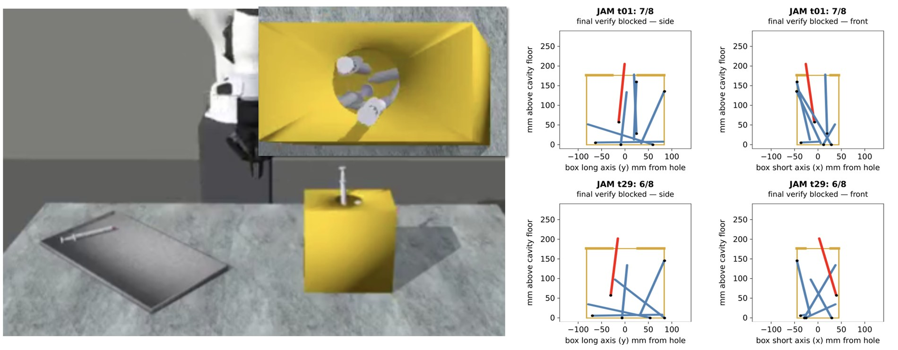

Baseline experiments
Three questions drive the evaluation: how do success rate and cycle time change as the magnitude and dimensionality of task variation increase; what are the failure modes; and can agentic systems reuse skills as task difficulty changes.
Two simulator implementations
Newton. VABAR is developed on the Newton physics engine. Success conditions extend the Behavior Domain Definition Language to represent both rigid and deformable objects as a common specification across the full task suite.
Isaac Lab Arena (ILA). A second implementation runs on NVIDIA Isaac Lab Arena, a framework for composing, executing and analysing policy-evaluation benchmarks with GPU acceleration. ILA supplies environment composition — including object placement from semantic spatial relationships — multiple physics backends including Newton, parallel GPU evaluation, and robustness analysis across environment and task variations. It is executed on a cluster of NVIDIA L40 GPU nodes. The two implementations differ in texture, lighting, assets and robot implementation.
Four evaluated systems
- GaP (Human–Newton). A manually specified computation graph connecting skills from the modular skill library, executed on the Newton implementation.
- GaP (Human–ILA). The same manually specified graph executed on the ILA stack, measured on its own instances at N = 40 per variant.
- Claude Code. A general-purpose coding agent (Claude Code with Claude Opus 5) with no robotics-specific harness or skill library.
- GaP. The computation graph is autonomously generated by the same model and connected to the skill library. Systems 1 and 4 share the same perception, skill, planning and execution modules, so the gap between them reflects graph composition and parameterization alone.
Each task–difficulty combination contains N = 30 independently generated instances per evaluation condition, shared across conditions.
| Task | Diff. | a. GaP (Human–Newton) | b. GaP (Human–ILA) | c. Claude Code | d. GaP | ||||
|---|---|---|---|---|---|---|---|---|---|
| Succ. | Cyc. (s) | Succ. | Cyc. (s) | Succ. | Cyc. (s) | Succ. | Cyc. (s) | ||
| Tool Sorting | L1 | 47.1 | 421.6 | 20.0 | 555.0 | 0.0 | — | 26.7 | 134.2 |
| L2 | 33.7 | 913.8 | — | — | 0.0 | — | 13.3 | 232.3 | |
| Tool Hanging | L1 | 86.7 | 86.1 | 67.5 | 98.3 | 16.7 | 96.2 | 33.3 | 81.5 |
| L2 | 81.7 | 158.4 | 50.0 | 138.3 | 10.0 | 190.8 | 10.0 | 270.9 | |
| Gear Meshing | L1 | 100.0 | 165.9 | 87.5 | 198.9 | 0.0 | — | 70.0 | 156.6 |
| L2 | 90.0 | 235.5 | 80.0 | 381.3 | 0.0 | — | 60.0 | 284.1 | |
| Syringe Packing | L1 | 87.0 | 228.8 | 52.5 | 939.0 | 0.0 | — | 33.3 | 371.1 |
| L2 | 63.0 | 472.3 | 40.0 | 1810.0 | 0.0 | — | 12.1 | 652.2 | |
| Cable Insertion | L1 | 86.7 | 78.8 | 97.5 | 104.9 | 0.0 | — | 36.7 | 79.0 |
| L2 | 30.0 | 74.2 | 17.5 | 118.8 | 0.0 | — | 23.3 | 80.5 | |
| Cable Routing | L1 | 46.7 | 116.0 | 50.0 | 145.9 | 3.3 | 120.7 | 36.7 | 50.8 |
| L2 | 46.7 | 189.8 | 5.0 | 151.5 | 0.0 | — | 13.3 | 120.3 | |
Succ.: success rate (%); bar length encodes the same number. Cyc.: median cycle time in simulated seconds among successful trials; a dash means no successful trial to take a median over. GaP (Human) is a manually specified computation graph executed on the same perception, skill, planning and execution stack as GaP. Each task–difficulty condition contains N = 30 independently generated instances shared across all evaluation conditions, except GaP (Human–ILA), measured on its own instances at N = 40 per variant.
How success is counted
The evaluation unit is set by the dependency structure of each task. For tasks composed of repeated manipulation attempts that are independent by construction — sorting or hanging independently sampled objects — each object-level attempt is a trial, and success rate is the fraction of objects successfully manipulated. This avoids assigning zero success to an otherwise largely successful multi-object execution.
In tasks such as Gear Meshing, later insertions are conditioned on the states produced by earlier ones: inserting one gear changes the geometry and contact configuration the next gear meets. Multiple cable insertions count as separate trials only when each is independently initialised or reset. For sequential, state-dependent tasks the complete instance is the evaluation unit, with subgoal-level success reported as a diagnostic.
Cycle time is the simulated time elapsed from policy start until success, failure or timeout. The table reports the median among successful trials only.
For each unsuccessful execution we record the observed failure outcome and assign a primary failure source when supported by execution evidence. For cascading failures we attribute the execution to the earliest supported failure that explains the subsequent outcome. Failure-source percentages are conditioned on unsuccessful executions.
Where the failures are
Aggregate success rates do not say which part of the stack becomes unreliable as variation grows. Unsuccessful GaP executions decompose into perception, grasp and motion-planning failures — one primary source each.
The harness and skill library carry real weight
Using the same underlying language model, GaP achieves higher success than Claude Code in 11 of 12 task–difficulty conditions. On Gear Meshing it reaches 70.0% and 60.0% at Levels 1 and 2 where Claude Code records no successful trial. GaP still sits below the human-authored graphs on Newton in every condition, despite sharing the same perception, skill, planning and execution stack — so reliable skill composition and parameterization remain open problems for autonomous policy generation. These comparisons evaluate the combined system; they do not isolate the harness from the skill library.
Most errors are motion planning
In low-variation settings, perception and grasp generation are near-perfect across most tasks, leaving motion planning and trajectory execution as the primary failure source. As variation increases the dominant mode branches with the physics of the task: in cluttered scenes and deformable-object manipulation — syringe packing, cable routing — perception and grasping degrade sharply under visual occlusion and unmodelled cable mechanics. In precision-contact tasks such as USB-C insertion, state estimation stays robust while motion planning and fine insertion alignment account for nearly all failures.
A detailed physics model supports diagnosis
Pairing task-level verification with simulator ground-truth inspection identifies the physical conditions behind a failure. Two jammed syringe-packing episodes, t01 and t29, terminate with final verification reporting blocked and 7/8 and 6/8 syringes posted. In both, a syringe straddles the lid plane — needle end inside the cavity, opposite end above the opening — consistent with incomplete passage into the container. The surrounding syringes sit in different configurations, showing execution-induced variation: earlier placements alter the geometry encountered by later insertions.
Skill reuse is extensive across task classes
Despite spanning rigid-object manipulation, contact-rich assembly, precision insertion and deformable-object manipulation, VABAR policies reuse skills heavily. Core robot and perception capabilities — end-effector pose retrieval, SAM3-based segmentation — are shared across all six task classes, and higher-level semantic skills are reused across tasks with different objects but similar manipulation structure: Tool Hanging and Syringe Packing both rely on held-object motion, functional-feature perception, object registration and feature mating. Increasing task diversity does not necessarily require an entirely new set of skills. The central challenge is selecting the right skills, parameterizing them for the current geometry and task state, and composing them into task-specific behaviour.

The jam, recorded
Recovery behaviour, with and without the unjam skill